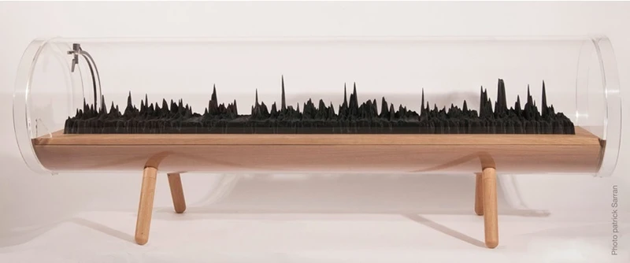
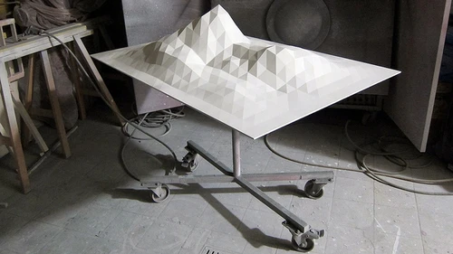
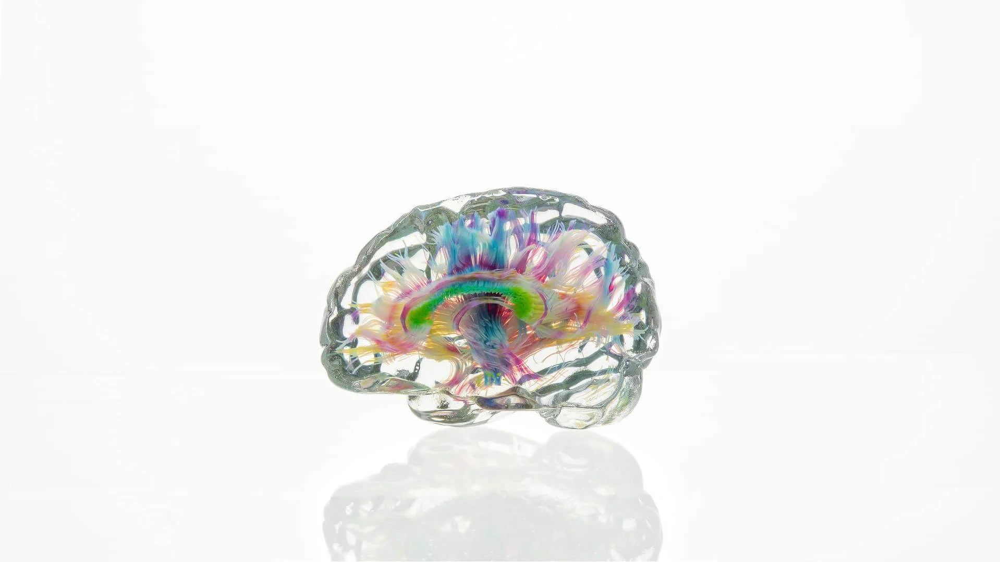
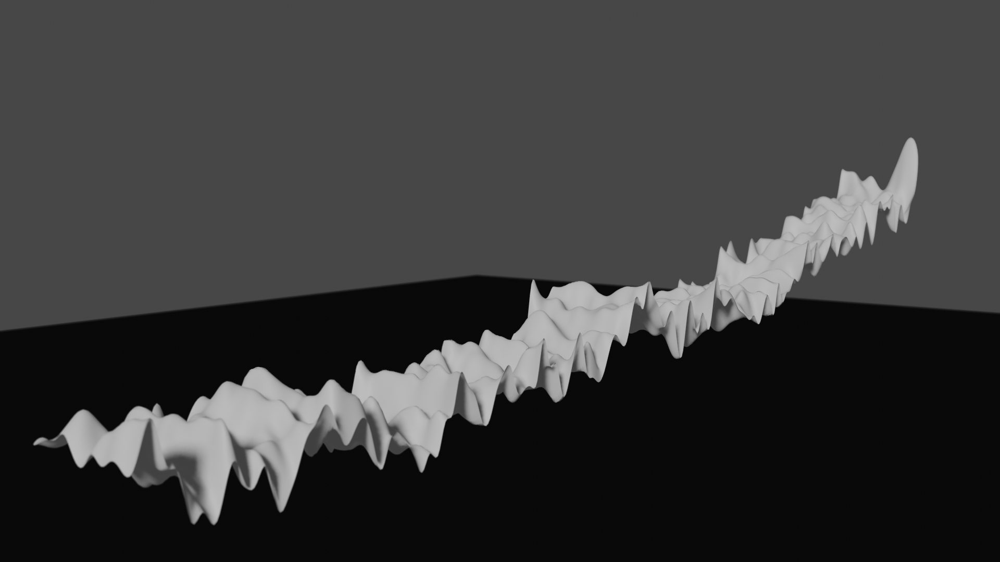

Making a Data Sculpture
Data can be complex and not easily represented in 2D. This module will teach us how to create 'data sculptures', representations of data in 3D.
We are going to use Blender to build a digital version of our data sculpture first. When we have it ready, we can export it to print in a 3D printer.
Learning objectives
- Be able to explain what a data sculpture is
- Use Python within Blender
- Use a 3D printer to create a physical data sculpture
Lesson plan
- Learn what a data sculpture is
- See some examples of data sculptures
- Find data that will work well as a data sculpture
- Create a digital data sculpture in Blender
- 3D print the data sculpture
Requirements
Each participant needs:
- A device with internet access
- Blender
- Access to a 3D printer
What is a Data Sculpture
A data sculpture is a representation of data in 3D.
Why would we want to do that? For a similar reason people have made sculptures instead of painting everything. Sculpture makes things real, placing them in our physical world. It is also able to represent more complexity than a 2D object. This is particularly important for us as data scientists wanting to communicate issues with data.
Examples
This idea might feel a bit strange but it is easiest to understand with some examples.


We can also represent data very accurately and more literally. The Making Data Matter project focuses on using physicalisation to give insights to datasets.

Find data that deserves a sculpture
For our data sculpture, it is best if we choose a dataset and choose three variables that we would like to show from that. For this lesson, two of the variables should be independent variables and one should be dependent1. For example:
| Independent | Dependent |
|---|---|
| Latitude and longitude | Height above sea level |
| Year and month | Amount of rainfall in Utrecht |
| The x and y position of a pixel in a photo | The brightness of the pixel |
For this example I'm going to use a dataset of global temperatures from 1880. I downloaded it from here and did a miminal clean of it. You can download the cleaned version here.
Build a digital data sculpture
We are going to use Blender to build a digital version of our data sculpture first. When we have it ready, we can export it to print in a 3d printer.
- Download Blender.
- Open Blender to a new project.
- Download this script I wrote.
- Open the script in Blender's text editor.
- Set the file to point to your dataset, which should be in a
.csvformat. - Run the script to create the object.
You should now have a digital data sculpture representing your dataset.
Exercise (Optional): Polishing the data sculpture
- If you want, you can add materials to the object, play with the lighting and even animate the camera. Check out at a Blender tutorial if it is new to you.

Use 3D printing to make a physical data sculpture
- Export the object as an
.objfile. - Import the file in 3D printing software.
- Prepare it.
- Print it.
Extensions
Exercise (Optional): Getting creative
- Use data of a different form, for example with two dependent variables.
-
In the Extensions section, we can try more adventurous datasets. ↩